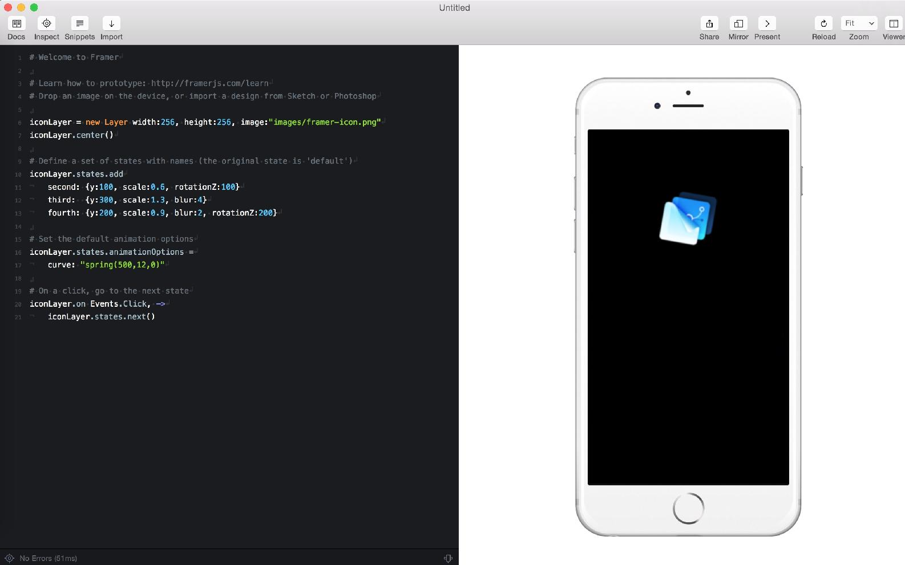
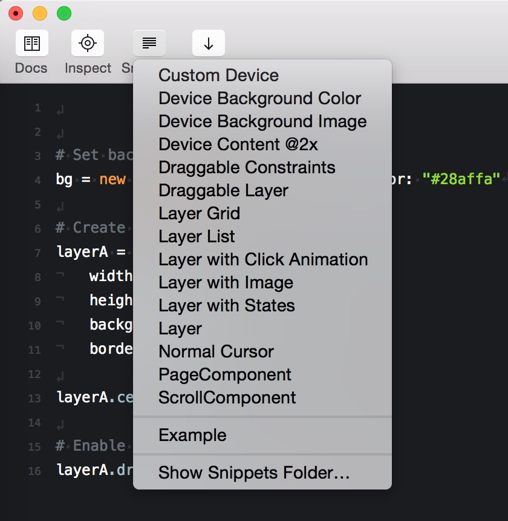

CoffeeScript 是 JavaScript 的二代语言，或许这两种语言对你来说此刻都很陌生。不过没关系，我们学 CoffeeScript，问题立刻就少了一半。
最快入门一个语言的方法不是从理论开始，而是直接使用这门语言。Swift 是我们的主菜，CoffeeScript 这个小菜可以直接端上来。
你可以进入 CoffeeScript 的官网，点击 Try CoffeeScript 来学习这门语言。
从现在开始你要习惯计算机世界里各种奇奇怪怪的名字，做的事情都很简单，但是名字着实卖弄。
number = 42
alert number
把 42 赋值给 number，接下来点击右边的 RUN，你就会看到一个弹窗提示 42。
newNumber = 43
if newNumber > 42
number = newNumber
else
number = 42
alert number
if..else 是程序世界最常用的条件判断语句，这里的含义就是当 newNumber 大于 42 的时候，number 赋值为 newNumber 的值，如果小于 42，number 赋值为 42。
点击 RUN，你会看到弹窗提示 43。
sum = (x,y) ->
return x + y
number = sum(1,2)
alert number
函数是程序世界里另外一个非常常用的功能，这里我们定义了一个函数 sum 它接受两个参数 x 和 y，并把他们的求和返回出来。
当我们执行 sum(1,2) 的时候，1 和 2 就分别作为 x,y 传入了函数，并且执行。如果函数不要求任何参数，那么就是单纯的 function_name() 即可。
RUN 一下可以看到弹窗提示 3。
可能现在你的大脑已经浆糊了， -> 是什么来的？
其实这些东西都不需要深究，每一种编程语言都有自己的约定，而 -> 就是表示函数的特殊符号，你可以当作这是画画。
CoffeeScript 使用行与行之间的缩进关系来表示代码之间的关系，如果你写成这样
sum = (x,y) ->
return x + y
number = sum(1,2)
alert number
那么再点击 RUN 的时候，就会出现这个错误
SyntaxError: Illegal return statement
因为缩进关系一变化，逻辑就也发生了变化。
me =
age: 23
height: 178
weight: "secret"
alert me.weight
我们可以把一组参数打包进去一个对象里，比如这里我们创建了一个 me 对象，里面有年龄，身高，体重。
通过 me.weight 这种方式，就能够获得对象属性所对应的值。
当你 RUN 的时候，就会有弹窗提示，secret。
打开 Framer 之后就可以看到他们已经附带了一个例子

逐行解释下：
iconLayer = new Layer width:256, height:256,
image:"images/framer-icon.jpg"
# 创建一个 Layer，名字是 iconLayer，宽度是 256，高度是 256
# 显示本程序文件所在的文件夹下 images 文件夹里的 framer-icon.jpg
iconLayer.center()
# 居中显示这个 Layer
iconLayer.states.add
second: {y:100, scale:0.6, rotationZ:100}
third: {y:300, scale:1.3, blur:4}
fourth: {y:200, scale:0.9, blur:2, rotationZ:200}
# 给这个 Layer 定义三种状态，分别设定了三种状态下 Layer 的 y 坐标
# scale 缩放，以及 blur 模糊程度，和 Z 轴的旋转
# 这里有 second, third, fourth, 但是first 是什么？
# 没有做任何变化之前的默认状态就是 First
iconLayer.states.animationOptions =
curve: "spring(500,12,0)"
# 设置进行状态变化的时候的动画曲线参数，spring(500,12,0) 是弹簧动画
# 里面参数的意义就需要阅读文档了
iconLayer.on Events.Click, ->
iconLayer.states.next()
# 当用户点击这个 Layer 的时候， Layer 的状态自动切换到下一个
对于 spring 参数的解释，你可以查看这里， Framer 有两种 Spring 效果，spring-rk4 和 spring-dho，而 spring 被映射到了 spring-rk4，所以上面的也可以写作 spring-rk4(500,12,0)。
删掉上面所有的代码，点击 Snippets 选择 Draggleable Layer

这时候右面 iPhone 就切换了一个场景，你可以拖动中间的白色矩形，来试试交互的感觉。
bg = new BackgroundLayer backgroundColor: "#28affa"
# 设置背景
layerA = new Layer
width: 250
height: 250
backgroundColor: "#fff"
borderRadius: 8
# 除了高宽，这个 Layer 还设置了背景色，圆角半径 8
layerA.center()
layerA.draggable.enabled = true
# 使这个 Layer 可以跟随拖动
在我刚接触这样代码的时候，我最大的疑问是，为什么 layerA.draggable.enabled = true 设置了后，他就可以跟随我的拖动了？背后都发生了什么？
这些疑问会在某一天你来写一个通用模块的时候迎刃而解。
在 iOS 上下载 Frameless 这个浏览器，你在手机上打开的时候，他就会询问你是不是连接 Framer，点击 Sure，就可以自动同步两边的界面。
在手机上点点试试，对，现在就是这么神奇。
Framer 带了很多例子，先从这些例子来学习是很好的开始，你可以修改里面参数，反复运行，不管结果是对还是错，当成一个游乐园来玩耍，把不理解的地方都打包起来。
玩累了之后去官网查看对应的文档，当你在文档里看到要找的答案，茅塞顿开的感觉请牢牢记住哟。
恭喜你，很快，你就可以入门这个技术了。